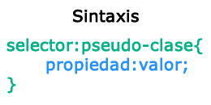

Selecciona los elementos basados en un cierto estado:

Haz clic aquí
Nota a:hover debe definirse después de a:link y a:visited, así como, a:active debe definirse después de a:hover para ser efectivos.
a:hover
a:link
a:visited
a:active